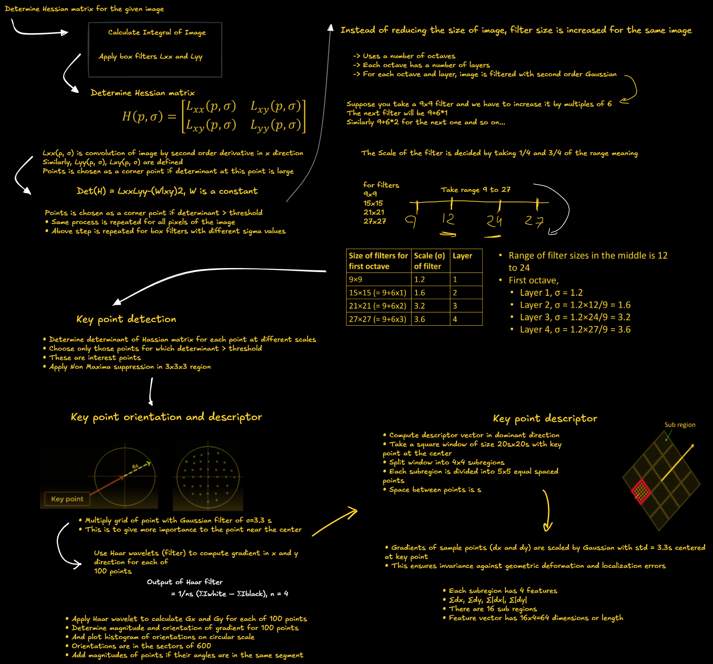

Scale-Invariant Feature Transform (SIFT)¶
SIFT is an algorithm used to detect distinct key points or features in an image.
These key points are robust to changes in scale, rotation, and affine transformations, making SIFT widely used in object recognition, image stitching, and 3D reconstruction.
Advantages of SIFT Detector¶
Note
SIFT provides a highly distinctive feature descriptor, making it useful for matching objects in large databases.
| Advantage | Description |
|---|---|
| Locality | Features are local and robust to occlusion. Does not require segmentation of objects. |
| Distinctiveness | Features can be matched to a large database of objects. |
| Quantity | Generates many features, even for small objects. |
| Efficiency | Close to real-time performance. |
| Extensibility | Easily extends to various feature types. |

The image above illustrates SIFT algorithm.
Integral Image¶
An integral image is a technique that allows for the fast computation of the sum of pixel values over a rectangular region.
Key Properties¶
- Speeds up sum calculations for box-type filters.
- Reduces computational cost for large-scale image processing.
Mathematical Representation¶
For an input image \( I(x,y) \), the integral image \( I_{Int}(x,y) \) at a location \( (x,y) \) is computed as:

Use of Integral Image¶
The sum of all pixel values in a region can be quickly computed using four values:
where: - \( A, B, C, \) and \( D \) are elements of the integral image at the corners of the selected region.
Note
Even if size of filter increases, number of computations (3 additions/subtractions) does not increase
Comparison of SIFT and SURF¶
| Feature | SIFT (Scale-Invariant Feature Transform) | SURF (Speeded-Up Robust Features) |
|---|---|---|
| Dimensionality | High-dimensional feature descriptor | Lower dimensional, more compact descriptor |
| Accuracy | Reduction in dimensionality decreases accuracy | More efficient without significant accuracy loss |
| Keypoint Detection | Approximates Laplacian of Gaussian (LoG) using Difference of Gaussian (DoG) | Approximates LoG using Box Filters |
| Computation | Uses determinant and trace of the Hessian matrix | Uses only determinant of Hessian matrix |
| Speed | Computationally expensive | Faster due to integral images and parallel convolution |
| Real-Time Applications | Not optimized for real-time processing | Suitable for real-time tracking & object recognition |
Tip
SURF is a faster alternative to SIFT, making it suitable for real-time applications while maintaining robustness.
Speeded-Up Robust Features (SURF) Algorithm¶
1. Detector¶
- Construct Hessian matrix using box filters at each pixel to determine keypoints.
- Increase the size of box filters and repeat step 1.
- For each keypoint, select points within a radius of 6σ (where σ is the standard deviation of the keypoint's filter).
- Apply a Gaussian filter of 2.5σ on the keypoint.
- Use a Haar wavelet of size 4σ to determine the magnitude and direction of points.
- Draw a histogram with 6 bins to identify the orientation of the keypoint.
2. Descriptor¶
- Around each keypoint, select a square region of size (20σ × 20σ).
- Divide the region into 16 sub-regions.
- For each sub-region, determine a vector of length 4.
- The final descriptor vector has a total length of 64.
Tip
SURF is significantly faster than SIFT due to its use of box filters and integral images, making it suitable for real-time applications.
Speeded Up Robust Features (SURF) algorithm¶

Applications of Feature Descriptors¶
Feature descriptors are powerful tools in computer vision for identifying and describing local features in images. They enable a wide range of applications:
- Image Matching Matches keypoints between different images of the same scene or object. Essential for applications like panorama stitching, where multiple images are combined into a wide-angle view.
- Object Recognition Identifies and locates objects within images by matching features between a known object and a scene. Widely used in robotics and automated inspection systems.
- 3D Reconstruction Matches images taken from different viewpoints to reconstruct 3D models of objects or environments. Essential for applications in augmented reality (AR) and virtual reality (VR).
- Image Retrieval Enables content-based image retrieval by searching for and retrieving images based on visual content rather than metadata.
- Scene Recognition Analyzes the spatial arrangement of features to recognize and categorize scenes or environments. Useful in autonomous navigation and contextual AI systems.
- Robotic Vision Helps robots navigate, identify objects, and interact with their environment more effectively.
- Video Tracking Tracks objects or people in video sequences by matching keypoints frame-to-frame. Important for surveillance and motion analysis.
- Forgery Detection Used in digital forensics to detect tampered or forged images by identifying inconsistencies in local features.
2D Gabor Filter ‚Äì Parameters & Properties¶
Overview¶
The Gabor filter is a powerful tool used for feature extraction, especially in texture and edge detection. It is a bandpass filter that operates in both the spatial and frequency domains, mimicking the way the human visual system perceives textures.
Key Characteristics¶
✅ Localized in both space & frequency – Helps capture patterns effectively.
✅ Combination of Gaussian & Sinusoidal components – Provides smooth feature extraction.
✅ Mimics human vision – Recognizes textures similar to human eyes.
Mathematical Representation¶
A 2D Gabor filter is defined as:
where:
- \( x' = x \cos\theta + y \sin\theta \)
- \( y' = -x \sin\theta + y \cos\theta \)
Core Parameters of Gabor Filter¶
| Parameter | Symbol | Description |
|---|---|---|
| Wavelength | \( \lambda \) | Controls the width of the stripes in the Gabor function. |
| Orientation | \( \theta \) | Defines the angle of the normal to the parallel stripes of the Gabor function. |
| Phase Offset | \( \psi \) | Determines the position of the sinusoidal function, affecting edge detection. |
| Standard Deviation | \( \sigma \) | Defines the spread of the Gaussian envelope, controlling the extent of localization. |
| Aspect Ratio | \( \gamma \) | Specifies the ellipticity of the Gabor function's support. |
| Bandwidth | \( B \) | Controls the range of spatial frequencies covered by the filter. |
How Parameters Affect the Gabor Filter¶
1Ô∏è‚É£ Wavelength (Œª) ‚Äì Stripe Width¶
- Controls the width of the sinusoidal pattern.
- Larger λ → Wider stripes → Detects coarse textures.
- Smaller λ → Narrower stripes → Detects fine textures.
2Ô∏è‚É£ Orientation (Œ∏) ‚Äì Direction of Features¶
- Determines the angle at which the filter responds best to edges.
- Example: A horizontal edge detector has \( \theta = 90^\circ \).
3Ô∏è‚É£ Phase Offset (œà) ‚Äì Sinusoidal Shift¶
- \( \psi = 0 \) → Cosine Gabor (Even filter) → Detects bar-like structures.
- \( \psi = \frac{\pi}{2} \) → Sine Gabor (Odd filter) → Detects line-like structures.
4Ô∏è‚É£ Standard Deviation (œÉ) ‚Äì Gaussian Spread¶
- Determines the size of the receptive field.
- Large \( \sigma \) → More blurred edges.
- Small \( \sigma \) → More sharp edges.
5Ô∏è‚É£ Aspect Ratio (Œ≥) ‚Äì Ellipticity¶
- Specifies the shape of the filter.
- Larger \( \gamma \) → More elongated filter (stretches in one direction).
- Smaller \( \gamma \) → More circular response.
Gray Level Co-occurrence Matrix (GLCM) ‚Äì Texture Analysis¶
Overview¶
The Gray Level Co-occurrence Matrix (GLCM) is a powerful statistical method used in image processing and computer vision to analyze texture features by examining the spatial relationships between pixel intensities.
üîπ Key Applications:
✅ Texture Analysis – Identifies patterns in images.
✅ Feature Extraction – Helps in classification tasks.
✅ Medical Imaging – Detects abnormalities in scans.
✅ Remote Sensing – Analyzes satellite imagery.
GLCM ‚Äì How It Works¶
GLCM computes how often pairs of gray-level intensities occur at a specific spatial relationship (distance & direction) within an image. This helps extract meaningful texture features.
Statistical Features Derived from GLCM¶
| Feature | Formula | Description |
|---|---|---|
| Contrast | \( \sum_{i,j} (i - j)^2 p(i, j) \) | Measures intensity variation (higher contrast = more difference in pixel values). |
| Dissimilarity | ( \sum_{i,j} | i - j |
| Energy | \( \sum_{i,j} p(i, j)^2 \) | Sum of squared elements → Measures uniformity. |
| Homogeneity | ( \sum_{i,j} \frac{p(i, j)}{1 + | i - j |
| Entropy | \( \sum_{i,j} -p(i, j) \log_2(p(i, j)) \) | Measures randomness → Higher entropy = more complex textures. |
| Correlation | \( \sum_{i,j} \frac{(i - \mu_i)(j - \mu_j) p(i, j)}{\sigma_i \sigma_j} \) | Measures linear dependency between pixel intensities. |
GLCM Mean & Variance¶
-
GLCM Mean: Represents the average occurrence of a pixel intensity based on spatial relationships.
$$ \mu_i = \sum_{i,j} i p(i, j), \quad \mu_j = \sum_{i,j} j p(i, j) $$ -
GLCM Variance: Measures spread (dispersion) of pixel intensities around the mean.
$$ \sigma_i^2 = \sum_{i,j} p(i, j)(i - \mu_i )^2, \quad \sigma_j^2 = \sum_{i,j} p(i, j)(j - \mu_j )^2 $$